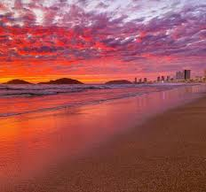

Los atardeceres en Mazatlán, donde el sol se oculta en el mar, son espectáculos naturales famosos por sus colores vibrantes que cambian según la estación, ofreciendo desde tonos dorados en primavera y verano hasta rosas y morados en otoño e invierno.
